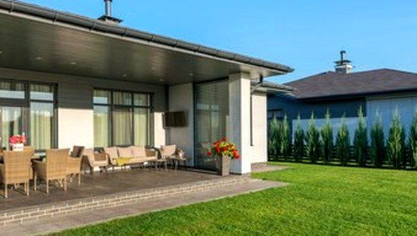
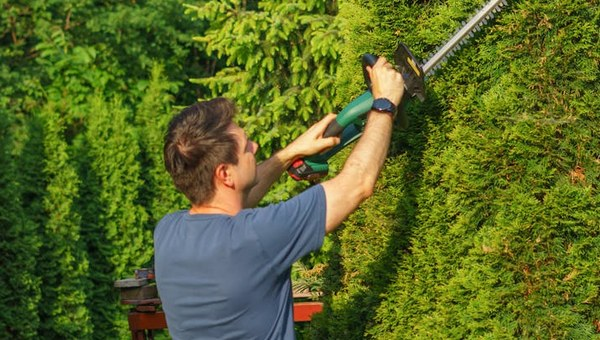
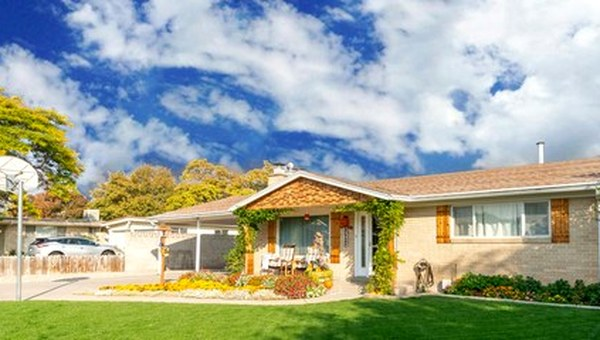
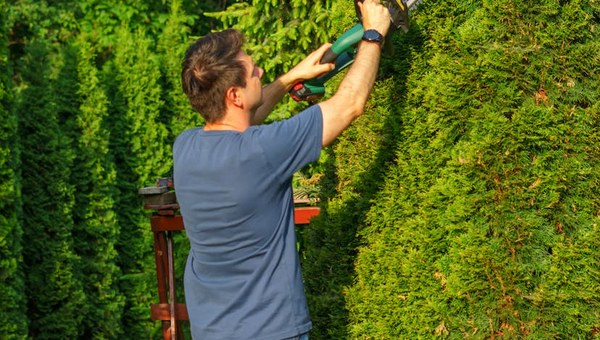
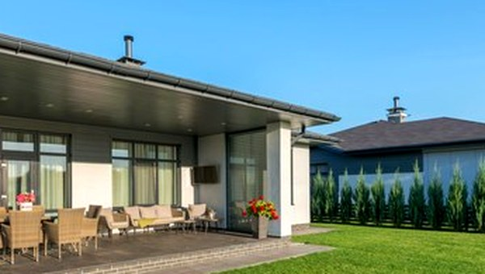
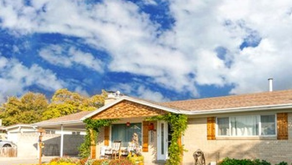
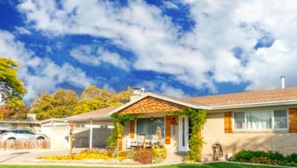

The Work Speaks
Every yard we touch gets the same standard — sharp edges, clean cuts, and a lawn the neighbors notice. Here's a sample of what we deliver week after week across East Pasco County.

Weekly Mow — Silver Oaks
Zephyrhills, FL

Hedge Trimming
Wesley Chapel, FL

Fresh-Cut Floratam
Epperson, Wesley Chapel

Hedge & Bush Shaping
Dade City, FL

Curb Appeal Mow
Mirada, San Antonio FL
Fresh Mulch Install
Lake Jovita, Dade City

Full-Service Weekly
Forest Lake, Zephyrhills
Fertilized & Healthy
Sandy Ridge, Zephyrhills
Mulch & Bed Work
Valleydale, Zephyrhills
Precision Weekly Mow
Cypress Creek, San Antonio

Driveway Edge Work
Epperson, Wesley Chapel

Dense & Green
Mirada, San Antonio FL
Want a Yard That Looks Like This?
Call us at (352) 206-6203 — we'll give you a free estimate for your property.